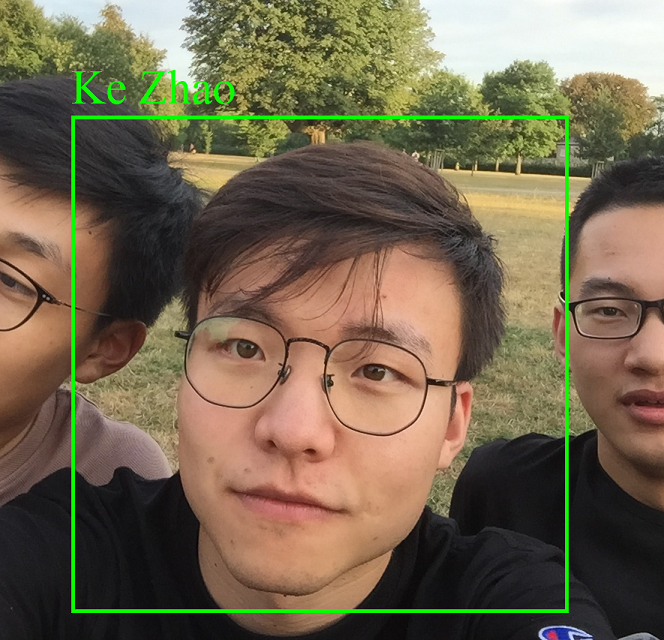
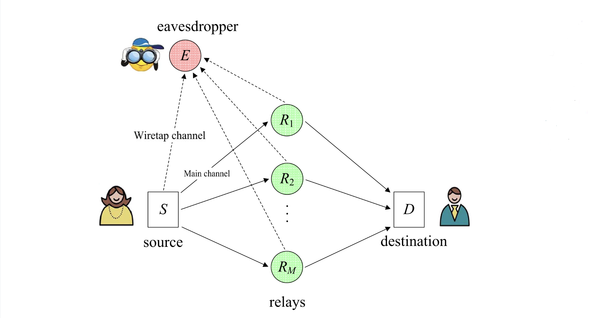
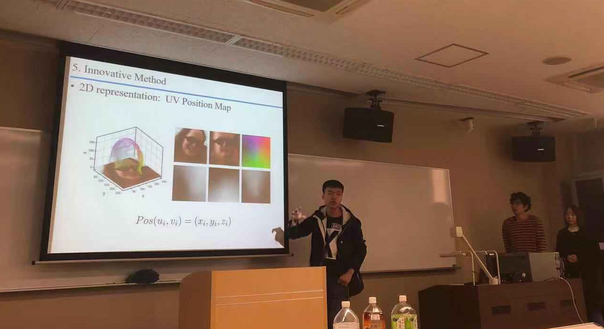
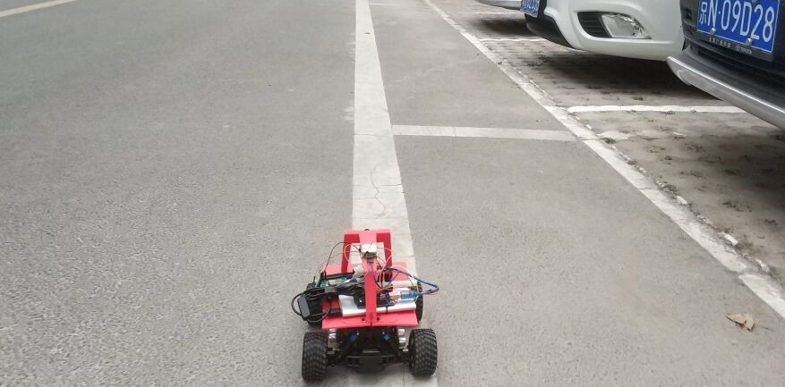
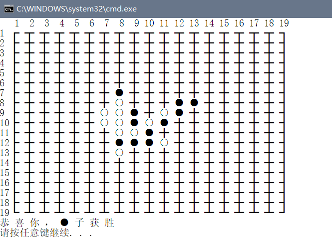

Ke ZhaoUndergraduate
Ye Peida Honors College
|
 |

"I have no special talent. I am only passionately curious." --Albert Einstein
Biography [CV]
I am currently a junior undergraduate majoring in Telecommunication Engineering at Beijing University of Posts and Telecommunications. My full CV can be viewed here.
My research interests include wireless communications and networking, and I am dedicated to taking the connection between human beings to another level. I am currently working on physical layer security in wireless networks under the guidance of Prof. Xiaofeng Tao.
Current Rank & GPA
- Rank: 1 / 570 (in School of Information and Communication Engineering)
- Major GPA: 4.0 / 4.0 Overall GPA: 4.0 / 4.0 Average score: 92.79 / 100 (Up to January, 2019)
Project Experience[More Details]
|  | (Working on it......)Physical Layer Security in Wireless Networks |

|
Fast-Response Monitor System for Network of Vehicles Based on FPGA Deep Learning Platform |
|  | 3D Head Model Construction from a Single Image for 3D Printing (International PBL project in cooperation with The University of Electro-Communications, Japan) |

|
Light-weight Object Detection Program for Smart Monitors |
|  | Autonomous Delivery Car Based on Deep Learning Techniques |
|  | AI Gobang Chess Game Based on Binary Search Tree Techniques |
Honors & Awards
| 11/2018 National Scholarship |
| 05/2018 Selected into Ye Peida Honors College |
| 11/2017 1st Prize in National University Student Mathematics Competition |
| 11/2017 1st prize in Beijing University Student Mathematics Competition |
| 08/2017 Enterprise Scholarship Sponsored by JJWorld (Beijing) Network Technology Co. |
| 07/2017 Merit Student of Beijing University of Posts and Telecommunications |
| 05/2017 Accepted into the Honors Program of School of Information and Communication Engineering |
© Ke Zhao | Last updated: 01/28/2019